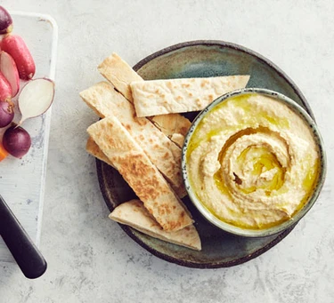
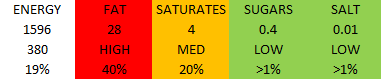
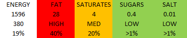

Hummus


Ingredients
- 1 drained can of chickpeas
- 60 to 90ml of cold water
- 1 pinch chopped garlic
- 1 lemon, juiced and half zested
- 3 tbsp tahini
Step 1:
Thoroughly rinse the chickpeas in a colander under cold running water. Tip into the large bowl of a food processor along with 60ml of water and blitz until almost smooth. Add the garlic, lemon and tahini, and blitz again. If the consistency is too thick, gradually pour in up to 30ml more water. Blitz again for about 5 mins, or until the hummus is smooth and silky.Step 2:
Season with a good pinch of sea salt and transfer to a bowl. Swirl the top of the hummus with the back of a dessert spoon. Serve with crunchy crudités and toasted pitta bread, if you like.